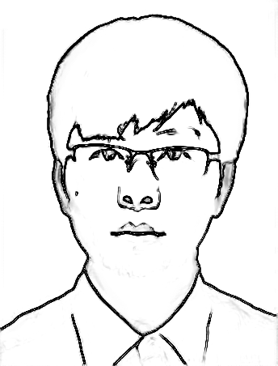
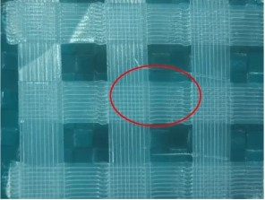
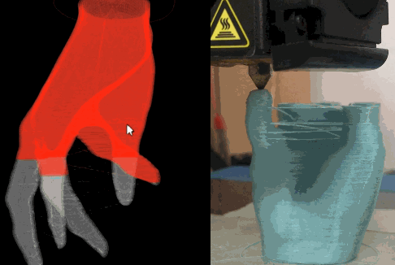
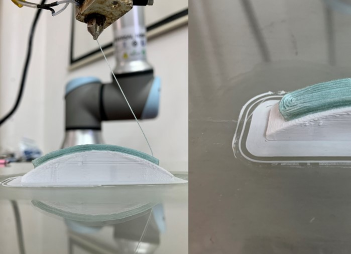
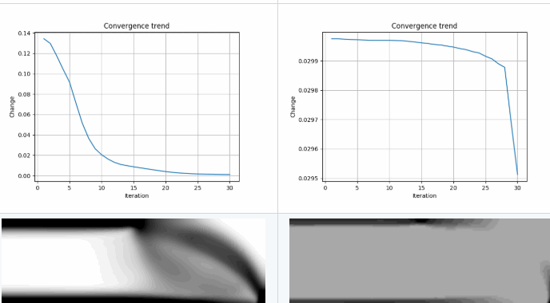

|  |
Yuan YaoRapid Manufacturing Center, Shanghai UniversityEngineering Training Center, Shanghai University yaoyuan@shu.edu.cn GoogleCitation |
|  |
Weaving path planning for FDMIn order to strengthen the connection between layers in FFF process, this project presents a 3D weaving tool path that can be constructed by a 5-layer cyclic structure to achieve inter-layer interlocking or embedding to improve mechanical properties between layers. The developed algorithm extends the weaving path as a common infill pattern to fill different structures. This process can be realized with a common three-axis 3D printer. Compared with 3D printed parts with layer to layer deposit, the interlayer anisotropy are significantly reduced to 10.21% and 0.98%. We further extend the planning method to adapt different geometric models. Project page |
|  |
Continuous fiber-reinforced 3D PrintingIn order to strengthen the connection between layers in FFF process, this project presents a 3D weaving tool This project presents a method for printing fiber-reinforced composite on the common fused filament fabrication (FFF) platform. Polylactic Acid (PLA) and Polyethylene terephthalate (PET) fibers are used as printing materials. And a spatial continuous toolpath planning strategy is designedto reduce the workload of post-processing. Experimental results show that this process not only enables the printing of models with complex geometric shapes but also supports material recycling and reuse. Mechanical tests show that the maximum tensile strength of continuous PET fiber-reinforced thermoplastic composites (PFRTPCs) is increased by 117.8% compared to PA66. Project page |
|  |
3D printing by multiple axies robot armIn order to strengthen the connection between layers in FFF process, this project presents a 3D weaving tool This project aims transporting 3D printing softwares from 3-axis device to multi-axis robot arm platforms. The hardware system and software system are designed to synchronize the movement of TCP and the material feeding. Both continuous fiber-reinforced composite and the pure composite are supported as the printing material, and it can print on different spatial planes and curve planes. Compared with traditional 3D printing, this manufacturing method is flexible enough to fill material along a spatial path that can reduce the impact of the anisotropy of the mechanical properties of the fiber-reinforced material on the 3D printed structure.. Project page |
|  |
Rule-driven topology optimizationIn order to strengthen the connection between layers in FFF process, this project presents a 3D weaving tool The goal of our research is to provide a rule based method to simplify the topology optimization process. We use defeasible logic to decribe the designer's incomplete knowledge as rules. A rule-driven structure evolution framworks is designed to generate satisfied structure. By using this design pattern, the design knowledge can be saved, translated, and accumulated. Project page |
计算机图形学： 中国科大刘利刚老师提供的入门教程。
3D建模与处理软件简介 对于机械，増材制造和组织修复专业的学生，应熟练掌握Cura和通用CAD/CAM工具中的一种。
多边形网格处理 由Mario Botsch、Mark Pauly 等人在EG2008年上做的多边形网格处理教程整理而来，涵盖三/四角网格的表达、微分几何基础、平滑、参数化、变形和修复等内容，包含基于Openmesh和OpenGL的演示代码。
与Mesh相关几何处理开发库，学习前建议首先学会使用构建工具CMake，编程IDE Visual Studio和版本管理工具Git
阅读与撰写
Recommended Courses